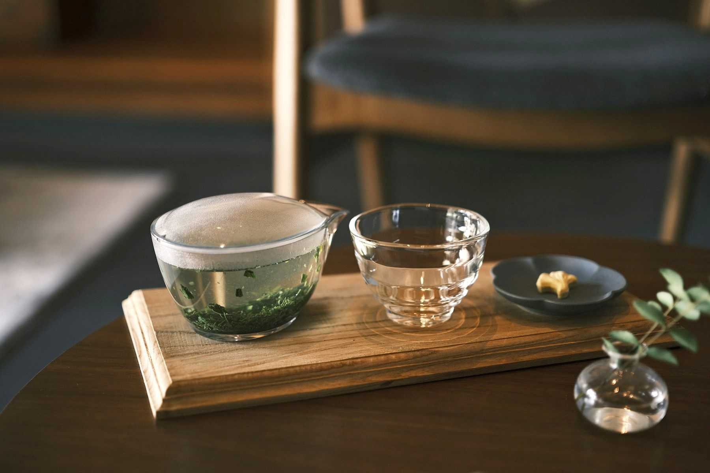

昭和28年創業
御菓子司 つきしろ
- 営業時間
- 9:00〜18:00（日曜は17:00まで）
- 定休日
- 火曜
- 所在地
- つきみ市本通り3-7 つきみ駅から徒歩3分
01
お品書き
価格はすべて税込です
- どら焼き北海道産の小豆の粒あん
- 260円
- 豆大福赤えんどう豆入りの羽二重餅
- 230円
- 本練り羊羹一棹 450g常温で60日保存できます
- 1,620円
- つきしろ最中6個入あんは別添えで食べる直前に詰めます
- 1,350円
- 上生菓子練り切り・きんとんなど月ごとに4種類を作っています
- 330円

※上生菓子のその月の種類は店頭でご案内しています
02
ご注文
店頭・電話予約・地方発送の3つの買い方があります
-
01
店頭で買う
9:00〜18:00（日曜は17:00まで）に店頭でお求めください上生菓子は午後に売り切れることがあります
-
02
電話で予約する
受け取りの2日前までにお電話でご予約ください10個以上・熨斗（のし）付きの注文もお受けしています
-
03
地方発送
羊羹・最中は全国へ発送しています送料は1か所につき880円です
ご予約・お問い合わせ000-000-0000（9:00〜18:00）
03
店舗情報
- 住所
- 〒000-0000 つきみ市本通り3-7
- アクセス
- つきみ駅 東口から徒歩3分です本通り商店街を北へ進み郵便局の向かいです
- 営業時間
- 9:00〜18:00（日曜は17:00まで）
- 定休日
- 火曜
- 駐車場
- 店の裏に2台分あります
- 支払い
- 現金・クレジットカード・交通系IC